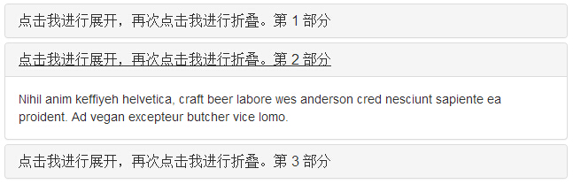
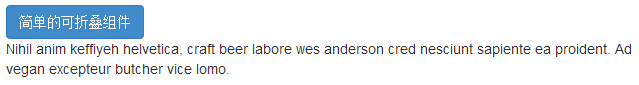
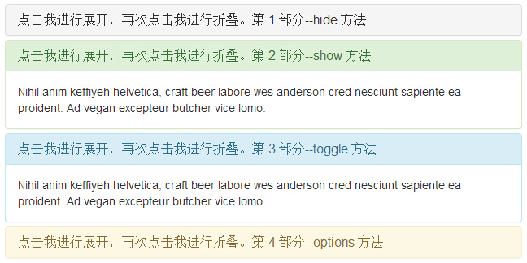
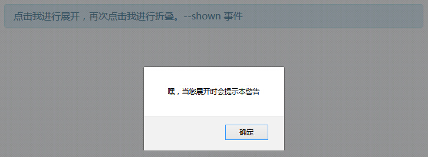

Bootstrap 折叠（Collapse）
折叠（Collapse）插件可以很容易地让页面区域折叠起来。无论您用它来创建折叠导航还是内容面板，它都允许很多内容选项。
如果您想要单独引用该插件的功能，那么您需要引用 collapse.js。同时，也需要在您的 Bootstrap 版本中引用 Transition（过渡）插件。或者，正如 Bootstrap 插件概览 一章中所提到，您可以引用 bootstrap.js 或压缩版的 bootstrap.min.js。
您可以使用折叠（Collapse）插件：
- 创建可折叠的分组或折叠面板（accordion），如下所示：
<!DOCTYPE html> <html> <head> <title>Bootstrap 实例 - 折叠面板</title> <link href="/bootstrap/css/bootstrap.min.css" rel="stylesheet"> <script src="/scripts/jquery.min.js"></script> <script src="/bootstrap/js/bootstrap.min.js"></script> </head> <body> <div class="panel-group" id="accordion"> <div class="panel panel-default"> <div class="panel-heading"> <h4 class="panel-title"> <a data-toggle="collapse" data-parent="#accordion" href="#collapseOne"> 点击我进行展开，再次点击我进行折叠。第 1 部分 </a> </h4> </div> <div id="collapseOne" class="panel-collapse collapse in"> <div class="panel-body"> Nihil anim keffiyeh helvetica, craft beer labore wes anderson cred nesciunt sapiente ea proident. Ad vegan excepteur butcher vice lomo. </div> </div> </div> <div class="panel panel-default"> <div class="panel-heading"> <h4 class="panel-title"> <a data-toggle="collapse" data-parent="#accordion" href="#collapseTwo"> 点击我进行展开，再次点击我进行折叠。第 2 部分 </a> </h4> </div> <div id="collapseTwo" class="panel-collapse collapse"> <div class="panel-body"> Nihil anim keffiyeh helvetica, craft beer labore wes anderson cred nesciunt sapiente ea proident. Ad vegan excepteur butcher vice lomo. </div> </div> </div> <div class="panel panel-default"> <div class="panel-heading"> <h4 class="panel-title"> <a data-toggle="collapse" data-parent="#accordion" href="#collapseThree"> 点击我进行展开，再次点击我进行折叠。第 3 部分 </a> </h4> </div> <div id="collapseThree" class="panel-collapse collapse"> <div class="panel-body"> Nihil anim keffiyeh helvetica, craft beer labore wes anderson cred nesciunt sapiente ea proident. Ad vegan excepteur butcher vice lomo. </div> </div> </div> </div> </body> </html>
结果如下所示：
- data-toggle="collapse" 添加到您想要展开或折叠的组件的链接上。
- href 或 data-target 属性添加到父组件，它的值是子组件的 id。
- data-parent 属性把折叠面板（accordion）的 id 添加到要展开或折叠的组件的链接上。
- 创建不带 accordion 标记的简单的可折叠组件（collapsible），如下所示：
<!DOCTYPE html> <html> <head> <title>Bootstrap 实例 - 简单的可折叠组件</title> <link href="/bootstrap/css/bootstrap.min.css" rel="stylesheet"> <script src="/scripts/jquery.min.js"></script> <script src="/bootstrap/js/bootstrap.min.js"></script> </head> <body> <button type="button" class="btn btn-primary" data-toggle="collapse" data-target="#demo"> 简单的可折叠组件 </button> <div id="demo" class="collapse in"> Nihil anim keffiyeh helvetica, craft beer labore wes anderson cred nesciunt sapiente ea proident. Ad vegan excepteur butcher vice lomo. </div> </body> </html>
结果如下所示：
正如您在实例中看到的，我们创建了一个可折叠的组件，与折叠面板（accordion）不同，我们没有添加属性 data-parent。
用法
下表列出了折叠（Collapse）插件用于处理繁重的伸缩的 class：
| Class | 描述 | 实例 |
|---|---|---|
| .collapse | 隐藏内容。 | 实例 » |
| .collapse.in | 显示内容。 | 实例 » |
| .collapsing | 当过渡效果开始时被添加，当过渡效果完成时被移除。 |
您可以通过以下两种方式使用折叠（Collapse）插件：
- 通过 data 属性：向元素添加 data-toggle="collapse" 和 data-target，自动分配可折叠元素的控制。data-target 属性接受一个 CSS 选择器，并会对其应用折叠效果。请确保向可折叠元素添加 class .collapse。如果您希望它默认情况下是打开的，请添加额外的 class .in。
为了向可折叠控件添加类似折叠面板的分组管理，请添加 data 属性 data-parent="#selector"。
- 通过 JavaScript：可通过 JavaScript 激活 collapse 方法，如下所示：
$('.collapse').collapse()
选项
有一些选项是通过 data 属性或 JavaScript 来传递的。下表列出了这些选项：
| 选项名称 | 类型/默认值 | Data 属性名称 | 描述 |
|---|---|---|---|
| parent | selector 默认值：false | data-parent | 如果提供了一个选择器，当可折叠项目显示时，指定父元素下的所有可折叠的元素将被关闭。这与创痛的折叠面板（accordion）的行为类似 - 这依赖于 accordion-group 类。 |
| toggle | boolean 默认值：true | data-toggle | 切换调用可折叠元素。 |
方法
下面是一些折叠（Collapse）插件中有用的方法：
| 方法 | 描述 | 实例 |
|---|---|---|
| Options: .collapse(options) | 激活内容为可折叠元素。接受一个可选的 options 对象。 | $('#identifier').collapse({
toggle: false
}) |
| Toggle: .collapse('toggle') | 切换显示/隐藏可折叠元素。 | $('#identifier').collapse('toggle') |
| Show: .collapse('show') | 显示可折叠元素。 | $('#identifier').collapse('show') |
| Hide: .collapse('hide') | 隐藏可折叠元素。 | $('#identifier').collapse('hide') |
实例
下面的实例演示了方法的用法：
<!DOCTYPE html>
<html>
<head>
<title>Bootstrap 实例 - 折叠（Collapse）插件方法</title>
<link href="/bootstrap/css/bootstrap.min.css" rel="stylesheet">
<script src="/scripts/jquery.min.js"></script>
<script src="/bootstrap/js/bootstrap.min.js"></script>
</head>
<body>
<div class="panel-group" id="accordion">
<div class="panel panel-default">
<div class="panel-heading">
<h4 class="panel-title">
<a data-toggle="collapse" data-parent="#accordion"
href="#collapseOne">
点击我进行展开，再次点击我进行折叠。第 1 部分--hide 方法
</a>
</h4>
</div>
<div id="collapseOne" class="panel-collapse collapse in">
<div class="panel-body">
Nihil anim keffiyeh helvetica, craft beer labore wes anderson cred
nesciunt sapiente ea proident. Ad vegan excepteur butcher vice
lomo.
</div>
</div>
</div>
<div class="panel panel-success">
<div class="panel-heading">
<h4 class="panel-title">
<a data-toggle="collapse" data-parent="#accordion"
href="#collapseTwo">
点击我进行展开，再次点击我进行折叠。第 2 部分--show 方法
</a>
</h4>
</div>
<div id="collapseTwo" class="panel-collapse collapse">
<div class="panel-body">
Nihil anim keffiyeh helvetica, craft beer labore wes anderson cred
nesciunt sapiente ea proident. Ad vegan excepteur butcher vice
lomo.
</div>
</div>
</div>
<div class="panel panel-info">
<div class="panel-heading">
<h4 class="panel-title">
<a data-toggle="collapse" data-parent="#accordion"
href="#collapseThree">
点击我进行展开，再次点击我进行折叠。第 3 部分--toggle 方法
</a>
</h4>
</div>
<div id="collapseThree" class="panel-collapse collapse">
<div class="panel-body">
Nihil anim keffiyeh helvetica, craft beer labore wes anderson cred
nesciunt sapiente ea proident. Ad vegan excepteur butcher vice
lomo.
</div>
</div>
</div>
<div class="panel panel-warning">
<div class="panel-heading">
<h4 class="panel-title">
<a data-toggle="collapse" data-parent="#accordion"
href="#collapseFour">
点击我进行展开，再次点击我进行折叠。第 4 部分--options 方法
</a>
</h4>
</div>
<div id="collapseFour" class="panel-collapse collapse">
<div class="panel-body">
Nihil anim keffiyeh helvetica, craft beer labore wes anderson cred
nesciunt sapiente ea proident. Ad vegan excepteur butcher vice
lomo.
</div>
</div>
</div>
</div>
<script type="text/javascript">
$(function () { $('#collapseFour').collapse({
toggle: false
})});
$(function () { $('#collapseTwo').collapse('show')});
$(function () { $('#collapseThree').collapse('toggle')});
$(function () { $('#collapseOne').collapse('hide')});
</script>
</body>
</html>结果如下所示：

事件
下表列出了折叠（Collapse）插件中要用到的事件。这些事件可在函数中当钩子使用。
| 事件 | 描述 | 实例 |
|---|---|---|
| show.bs.collapse | 在调用 show 方法后触发该事件。 | $('#identifier').on('show.bs.collapse', function () {
// 执行一些动作...
}) |
| shown.bs.collapse | 当折叠元素对用户可见时触发该事件（将等待 CSS 过渡效果完成）。 | $('#identifier').on('shown.bs.collapse', function () {
// 执行一些动作...
}) |
| hide.bs.collapse | 当调用 hide 实例方法时立即触发该事件。 | $('#identifier').on('hide.bs.collapse', function () {
// 执行一些动作...
}) |
| hidden.bs.collapse | 当折叠元素对用户隐藏时触发该事件（将等待 CSS 过渡效果完成）。 | $('#identifier').on('hidden.bs.collapse', function () {
// 执行一些动作...
}) |
实例
下面的实例演示了事件的用法：
<!DOCTYPE html>
<html>
<head>
<title>Bootstrap 实例 - 折叠（Collapse）插件事件</title>
<link href="/bootstrap/css/bootstrap.min.css" rel="stylesheet">
<script src="/scripts/jquery.min.js"></script>
<script src="/bootstrap/js/bootstrap.min.js"></script>
</head>
<body>
<div class="panel-group" id="accordion">
<div class="panel panel-info">
<div class="panel-heading">
<h4 class="panel-title">
<a data-toggle="collapse" data-parent="#accordion"
href="#collapseexample">
点击我进行展开，再次点击我进行折叠。--shown 事件
</a>
</h4>
</div>
<div id="collapseexample" class="panel-collapse collapse">
<div class="panel-body">
Nihil anim keffiyeh helvetica, craft beer labore wes anderson
cred nesciunt sapiente ea proident.
Ad vegan excepteur butcher vice lomo.
</div>
</div>
</div>
</div>
<script type="text/javascript">
$(function () {
$('#collapseexample').on('show.bs.collapse', function () {
alert('嘿，当您展开时会提示本警告');})
});
</script>
</body>
</html>结果如下所示：
